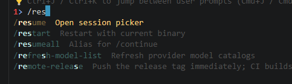

Pi Rust TUI — Customer Design Samples
This is a behavior and information-design reference, not a final visual theme. A production TUI must remain useful during normal work, slow model responses, tool execution, errors, cancellation, and small terminal sizes.
Observed blocker: submitting
hi panics with “Cannot start a runtime from within a runtime.” The first customer requirement is zero panic on the primary interaction path.1. First-run / ready state
Empty workspace
Pi Rust · ~/project
Ready to help with this project.
Model: Qwen3.5-0.8B-Q8_0.gguf · Provider: local
Tools: read, write, edit, bash, grep, find, ls
› Ask a question or describe a change…
Enter submit · Ctrl+C cancel · /help commands · 0 tokens
Missing configuration
Could not start a model
No usable model is configured.
Add a provider in:
~/.pirust/agent/models.json
[Open setup help] [Quit]
Actionable error · no stack trace · exit remains available
2. Normal conversation
Streaming response
› Explain this repository
This repository is a Rust port of Pi. It contains:
• pirust-ai for models and provider streams
• pirust-agent-core for the agent loop
• pirust-tools for file and shell tools
▌
assistant · streaming · Esc cancel · 312 tokens
Thinking enabled
Thinking
I need to inspect the project structure before proposing changes…
I found three relevant modules. The smallest safe change is…
thinking collapsed by default · press Ctrl+O to expand
3. Tool execution and safety
Read-only tool
› Find where the TUI starts
◇ grep interactive_mode.rs
472: run_interactive_mode
500: InteractiveMode::new
The TUI starts from main.rs when stdin and stdout are terminals.
tool completed · 2 matches · 0.4s
Destructive tool approval
◇ bash wants to run
rm -rf target/cache
This command can delete files.
[Run once] [Always allow] [Deny]
focus: Run once · Tab changes action · Enter confirms · Esc denies
Tool failure
◇ bash · failed
command exited with code 1
error: permission denied
The command failed without changing the file. I can try a safer alternative.
failure is visible · agent can continue · raw trace hidden behind details
4. Session, context, and recovery
Long context / compaction
Context nearly full
Used: 91% · 182K / 200K tokens
[Compact now] [Continue anyway] [Cancel]
Compaction preserves the latest tool results and user intent.
progress shown · no silent data loss · cancellation safe
Interrupted request
› Refactor the parser
I started inspecting the parser…
Request cancelled
No files were changed.
›
cancelled · session saved · prompt remains usable
Session picker
Resume a session
› 1 Today Fix TUI runtime panic
2 Yesterday Add catalog generator
3 Aug 21 Explore agent harness
↑↓ select · Enter open · Esc new session
title · cwd · modified time · model · searchable
5. Current implementation reference
Observed slash-command palette

Observed issue: the palette is visually cramped near the top edge; command descriptions need a stable column, scrolling, and a clear selected-row highlight.
6. Slash commands and selected model
Persistent status corner
cwd: ~/project · session: abc123
Conversation content appears here…
────────────────────────────────────────
Model anthropic / claude-sonnet-4-6
Mode reasoning: high · context: 42K / 200K · $0.18
Tools 7 enabled · local session · connected
›
The selected model is always visible without opening a menu.
Slash-command autocomplete
› /mo
/model Select provider and model
/models List available models
/mode Change interaction mode
/compact Compact conversation context
/resume Open session picker
/help Show all commands
↑↓ select · Tab complete · Enter run · Esc close
Palette filters as the user types; selected row is clearly highlighted.
Model picker
Select model
› anthropic / claude-sonnet-4-6
anthropic / claude-opus-4-6 1M reasoning
openai / gpt-5 400K reasoning
local / Qwen3.5-0.8B 32K local
Search: claude · ↑↓ move · Enter select · Esc cancel
Show provider, model id, context window, reasoning support, and local/remote status.
7. Required product details
Runtime stability No panic paths; async work must not call
block_on inside an existing Tokio runtime.Input model Clear focus, editable prompt, multiline input, paste handling, history, cursor movement, Ctrl+C, Ctrl+D, Esc.
Response state Distinguish thinking, streaming, tool call, waiting, completed, failed, cancelled, and queued.
Tool safety Show exact command, working directory, risk, approval choice, timeout, exit code, and output truncation.
File safety Preview diffs before writes, identify changed paths, allow reject/accept, and never hide partial failure.
Runtime identity Always show the working directory (cwd), session id, selected provider/model, reasoning level, context usage, token/cost estimate, and connection state.
Recovery Retry, cancel, resume, compact, continue after tool failure, and preserve session state.
Responsive layout Work at 80×24, 120×40, and wide terminals; no clipped prompts or unreadable status bars.
Accessibility Keyboard-only operation, visible focus, no color-only meaning, readable contrast, reduced animation option.
Observability Optional debug panel/log file, request id, elapsed time, and copyable error details—never a raw panic by default.
Configuration UX Explain missing credentials, invalid model, unavailable provider, and local-server setup with concrete paths.
Test coverage Golden event rendering plus interactive tests for submit, cancel, tool approval, resize, error, and runtime shutdown.
8. Acceptance bar before calling it customer-ready
| Area | Minimum acceptance |
|---|---|
| First prompt | Typing and submitting a prompt never panics and produces visible progress within one second. |
| Async architecture | The UI event loop stays responsive while the model runs; no nested runtime or blocking executor call on the UI thread. |
| Errors | Every expected failure is an inline, actionable message with retry/cancel guidance. |
| Tools | Destructive operations require a clear approval; edits show a diff; output cannot permanently destroy the layout. |
| Sessions | Restarting the process preserves the conversation and makes recovery discoverable. |
| Small terminals | 80×24 remains usable, with scrolling and no essential information hidden. |
| Verification | Automated tests cover the state transitions, not only individual widgets. |